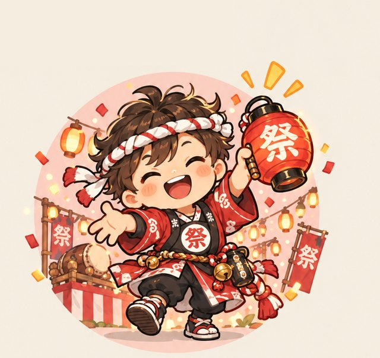

集中のしかた、発想のしかた、動き出し、熱の伝わり方。4つの軸からあなたの「尖り」を16のキャラに分け、どんな環境で爆発するかまで出します。
7段階で、直感で答えてください。途中で閉じても、続きから再開できます。この診断は自分の特性を知り活かすためのもので、医学的な診断ではありません。
どちらが良い・悪いではなく、どちらも「尖り」です。回答から、それぞれどちらにどれくらい寄っているかを%で出します。
属性は「発想」と「熱」の組み合わせ、キャラは「集中」と「動き出し」で決まります。気になるキャラを押すと解説が読めます。
この診断は、自分の特性を知り活かすためのもので、医学的な診断ではありません。

診断中です。少々お待ちください。
100の答えから、あなただけの尖りを読み解いています